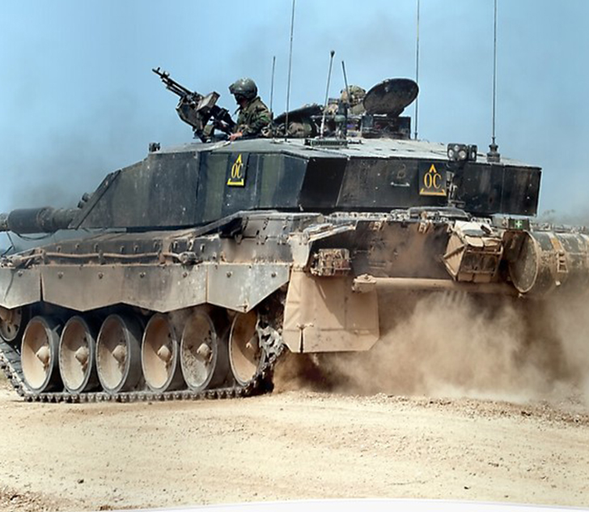

Challenger 2
Czołg podstawowy produkcji brytyjskiej pochodzący z pierwszej połowy lat 90. XX wieku. Powstał on na bazie doświadczeń zebranych na swoim poprzedniku, czyli Challengerze 1. którego zastąpił. Należy do trzeciej generacji czołgów. Armia brytyjska odebrała pierwsze egzemplarze czołgu 25 lipca 1994 r.
W budowie tego czołgu bierze udział 212 różnych, izraelskich przedsiębiorstw, które w sumie zatrudniają ponad 10 000 pracowników. Merkava uważany jest za jeden z najbezpieczniejszych dla załogi wozów czołgów na świecie.


Ostatnia aktualizacja: 17.11.2019